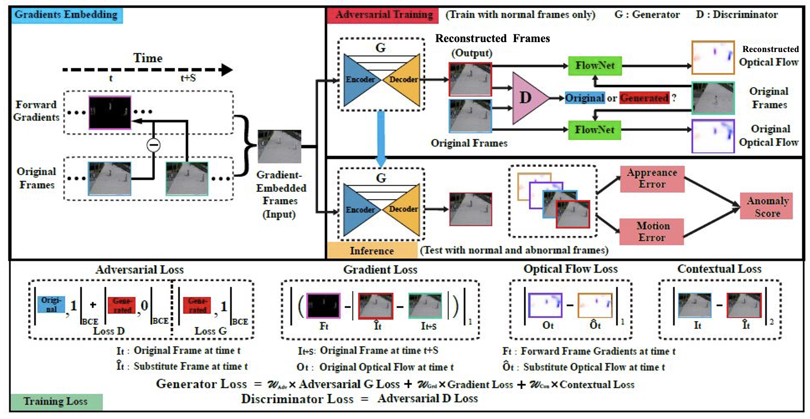

Wukang Road, Shanghai, Jan. 2022. |
Shoubin Yu
Hi, thanks for stopping by!
I am now a senior student at SEIEE, Shanghai Jiao Tong University.
Previously, I have participated in research projects at MIT-IBM Watson AI Lab, Shanghai AI Lab and MVIG.
I am interested in topics of multimodal learning.
Academic Email: shoubin [at] cs.unc.edu |
|
News
|
| Research |
| Publication | |

|
STAR: A Benchmark for Situated Reasoning in Real-World Videos |
| Preprint / Under Review | |

|
Regularity Learning via Explicit Distribution Modeling for Skeletal Video Anomaly Detection |
|  |
Adversarial Video Anomaly Detection via Gradient-Embedded Substitute |
| Internship & Experience |
|
|
| Awards & Patents |
|
|
| Misc |
|
|
|
|